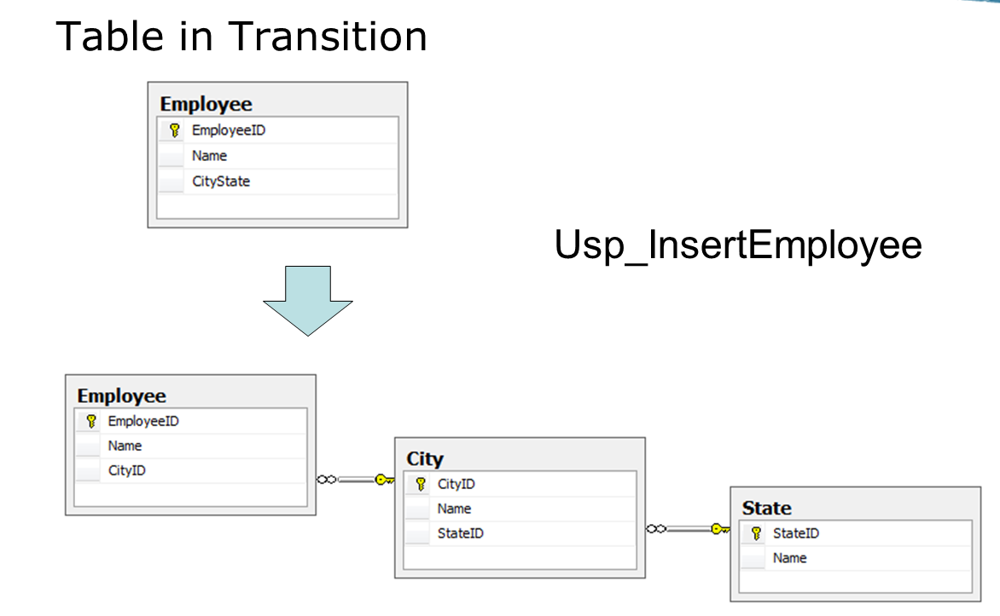
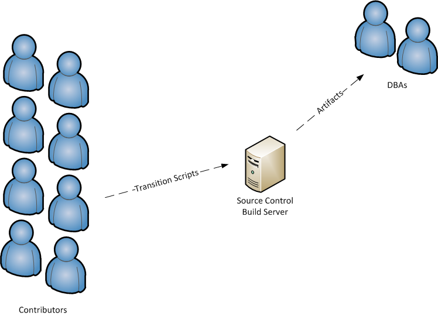

Database Versioning
An Introduction
By Paul Herrera
The Plan
- Concepts
- Implementation Demo
Goal 1:
Drive down the cost / fear of change.
Goal 2:
Guarantee all database changes are checked into version control.
Versioning strategies that work...
- By Object
- By Transition
By Transitions
You check in your transition scripts.
This guy does database versioning by transitions.

An Example
Scripts We Need
- CreateCityTable.sql
- CreateStateTable.sql
- AddCityIdToEmployee.sql
- DropCityStateFromEmployee.sql
- AlterInsertEmployeeStoredProc.sql
Run Order
How do we know in what order to run these scripts?
Number Prefix
- 001_CreateCityTable.sql
- 002_CreateStateTable.sql
- 003_AddCityIdToEmployee.sql
- 004_DropCityStateFromEmployee.sql
- 005_AlterInsertEmployeeStoredProc.sql
Anyone see a problem?
Hint: We have data loss.
Missing Transformation
We need to include the data transformation: a transition script.
Working Scripts
- 001_CreateCityTable.sql
- 002_CreateStateTable.sql
- 003_AddCityIdToEmployee.sql
- 004_TransformCityState.sql
- 005_DropCityStateFromEmployee.sql
- 006_AlterInsertEmployeeStoredProc.sql
Centralized Development

How do we handle...
- Changes on Shared Objects
- Restoring from Production
- Automated Tests
Developer Sandboxes

How do we handle...
- Changes on Shared Objects
- Restoring from Production
- Automated Tests
Princess Leia likes developer Sandboxes

Cost of Change

How can we prevent this?
Solution 1:
Automated Tests
with...
Solution 2:
Continuous Integration
Cost of Change with
Tests and CI

Keys to Automated Testing
Developer Sandboxes
Fixed Set of Test Data
We will need your help for test data!
This is cool!

Process Players
Artifacts are not created unless build passes.
Forces you to deal with the risk of change early.
Demo: Dimensional Database
Your developer sandbox is on your local machine.
Assumptions
- SQL Express is installed
- You have local admin on your machine
- You have Visual Studio installed (temporary)
- Powershell Scripting is Setup